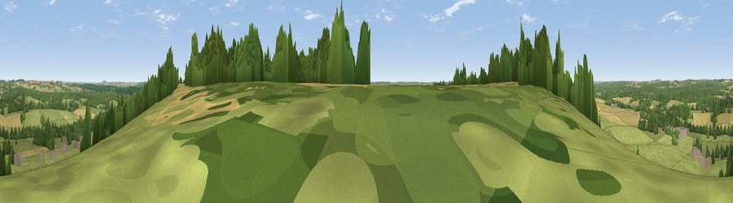

Viewpoint near West Dean
#20019 in England · top 15% of its area beats it · near West DeanThe view, rendered

A 360° render of this exact spot computed from the terrain model, tree cover and land cover — summer colours, afternoon light, calibrated against photographs of famous viewpoints. Real trees, hedges and buildings will differ in detail.
The panorama
Grey silhouette: terrain skyline in each direction (720 bearings, Earth curvature and refraction included). Dashed green: skyline with trees (+15 m) and buildings (+8 m) as obstacles. Blue strip: how far the ground is visible on each bearing.
Where the view opens
Wedge length = distance to the farthest visible ground on that bearing (vegetation-aware). Rings at 10, 25 and 50 km.
What fills the view
52% grassland · 25% woodland · 21% cropland · 2% built-up
Angular shares of the visible panorama (visual magnitude), not map area. Landscape diversity 0.47 (0–1 Shannon).
Key numbers
More beautiful places nearby
The staircase of upgrades: each row has a higher view potential than everything closer. Driving times are estimates from straight-line distance, calibrated against real road routing — check an actual route before setting out.
| Place | Direction | Drive | Score |
|---|---|---|---|
| Viewpoint near West Dean | W · 0 km | ~2 min | 57.9 |
| Dean Hill | W · 2 km | ~5 min | 59.6 |
| Viewpoint near West Grimstead | WSW · 6 km | ~13 min | 62.7 |
| Viewpoint near Sparsholt | ENE · 14 km | ~26 min | 66.9 |
| Viewpoint near Bulford | NNW · 18 km | ~31 min | 70.3 |
| Monk's Down | W · 33 km | ~51 min | 74.4 |
| Viewpoint near Berwick St John | W · 34 km | ~52 min | 78.2 |
| Viewpoint near Middleton | S · 41 km | ~60 min | 78.9 |
51.03209, -1.62454 · source: screening · position refined by local search. Computed location — check access rights before visiting.